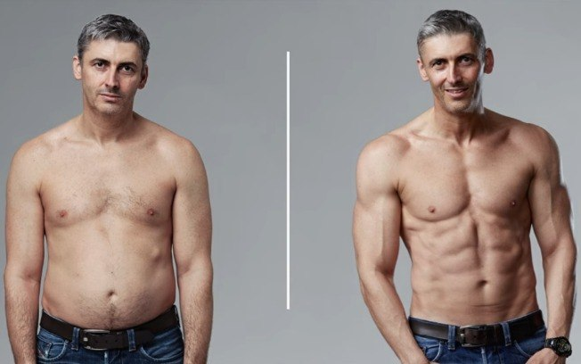
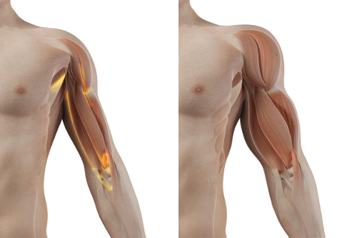

En 1 mes recuperarás la fuerza masculina, la resistencia física y ganarás 10 kg de músculos fuertes, sin ejercicio ni dieta, el efecto está confirmado por pruebas médicas independientes.

Daniel
Soy el profesor Carlos Ortiz Torres, científico en el campo de la ingeniería genética. En esta página, quiero presentarles el mayor logro de mi vida, por el que acabo de ser nominado al equivalente asiático del Premio Nobel: el Premio Confucio. He desarrollado una fórmula natural que estimula el aumento natural de los niveles de testosterona, sin la cual es imposible desarrollar músculo y recuperar la fuerza y la resistencia masculina. Gracias a mi método, cada hombre puede ganar de forma automática y permanente hasta 10 kg de masa muscular pura en 1 mes, así como aumentar la resistencia física y sexual.
Entonces, si quieres:
- ganar 10 kg de masa muscular durante 1 mes de forma automática, sin gimnasio ni dietas;
- conseguir un hermoso cuerpo tonificado, sin levantar pesas ni lesionarse;
- recuperar todas las funciones masculinas - a cualquier edad, incluso si de momento están reducidas;
- сonvertir los músculos flácidos y la grasa en músculos fuertes y firmes, incluso si estás luchando contra el sobrepeso o la obesidad.
- obtén 4 veces más energía y 5 veces más fuerza y así vuelve a sentirte como un verdadero hombre ...
... y si desea lograr todo esto sin entrenamientos excesivos, suplementos dietéticos peligrosos, dietas agotadoras y, por lo tanto, ahorrar decenas de miles de euros, lea lo que quiero decirte.
No importa сuántos años tengas o cuánto tiempo intentes recuperar tu fuerza anterior y músculos fuertes. Incluso si ha escuchado que a su edad es imposible lograr resultados, porque es un proceso natural y solo necesita resignarse... ¡Sepa que en un mes podrá disfrutar de músculos firmes y fuerza sin ir al gimnasio ni tomar hormonas!
Aquí explico por qué mi fórmula es una excelente alternativa a las dietas, suplementos, hormonas, química y ejercicio insoportable en el gimnasio:
- ganarás 10 kg de músculo en 1 mes, lograr más efecto que en 3 años de entrenamiento intenso;
- aumentará automáticamente la resistencia masculina, sin esfuerzo y sin sacrificio, la testosterona se restaura naturalmente
- no es necesario seguir ninguna dieta, - porque el aumento del crecimiento del tejido muscular y el aumento de la fuerza se produce a nivel del ADN;
- evitarás las consecuencias de una lesión, articulaciones y columna vertebral;
- protegerás tu salud, en lugar de envenenar el cuerpo con estimulantes y suplementos peligrosos;
- ahorrarás tiempo, en lugar de pasar la mitad de su vida en el gimnasio y con los médicos;
- Ahorrarás dinero en lugar de desperdiciarlos en gimnasios, dietistas y diversos medicamentos.
He desarrollado un método intragénico que aumenta automáticamente la fuerza masculina y crea 10 kg de masa muscular pura en 1 mes.
De esta manera, no tiene que hacer ejercicio, hacer dieta ni envenenarse con suplementos, hormonas y productos químicos sospechosos. Olvidarás todos los problemas y humillaciones que te preocupaban por la figura, fuerza masculina y resistencia. Comenzará a recuperar todas las funciones masculinas, desarrollará masa muscular pura, realizará sus actividades diarias: ir al trabajo, tomar una taza de café, contestar llamadas telefónicas. Cada movimiento activa los procesos regenerativos de las fibras musculares y estimula la producción de testosterona, que se recupera automáticamente y construye constantemente masa muscular pura.
Esto se debe a que desarrollé una fórmula intragénica que automáticamente aumenta la fuerza masculina y crea 10 kg de masa muscular magra en 1 mes. ¿Cómo lo hice?
Quería ayudar a mi hermano, que comenzó a perder su fuerza masculina y el aspecto físico anterior, por lo que comenzó a caer en una depresión.
Estudios recientes del Instituto de Deportes muestran que el 62% de los hombres mayores de 45 años en España tienen un problema de baja autoestima, debido a la falta de músculos prominentes y a la pérdida de resistencia, mientras que 4 de cada 10 de ellos se perciben como no hombres. Desafortunadamente, este problema también afectó al hermano mayor, Juan.
Mi hermano siempre ha sido un hombre muy valiente y atractivo con un cuerpo musculoso. Era popular entre las mujeres, incluso le envidiaba.
Sin embargo, ni siquiera iba al gimnasio. Pero con la edad, esto empezó a cambiar. Debido a su estilo de vida sedentario, aumentó de peso y, por supuesto, hubo cambios relacionados con la edad, como una disminución natural de la testosterona. Pero Juan no le dio ninguna importancia a esto, hasta una ocasión.
Una joven muy hermosa consiguió empleo en la empresa donde trabaja mi hermano. El la invitó a salir, confiando en que ella estaría de acuerdo. Pero ella le dijo que NO. Juan no podía creerlo, empezó a averiguar sobre ella, tal vez tenía a alguien, pero resultó que era absolutamente libre. Entonces el hermano decidió conquistarla con romance, traia café, chocolate, pasteles, luego cambió a obsequios más caros, pero todo fue en vano. Incluso empezó a tener problemas para dormir. Y en uno de los eventos corporativos, Juan le preguntó directamente por qué no le hacía caso. La mujer le respondió honestamente que él le parecía mucho mayor de lo que es, y que no hacía absolutamente nada al respecto. ¡Fue un shock!
Al principio Juan se deprimió, no se comunicaba con nadie, ni siquiera conmigo. Entonces todo pareció funcionar, fue al gimnasio, incluso perdió peso. Pero entonces ni siquiera sospechamos cómo resultaría. Con el tiempo, una figura bombeada se convirtió en una obsesión para él, no salia del gimnasio, comenzó a beber todo tipo de química, gastando mucho dinero en todo esto. Toda la familia estaba terriblemente preocupada por él. Estaba matando no solo su cuerpo, sino también su mente en busca de un cuerpo hermoso y la juventud.
Levantaba más y más pesas, tomaba más y más esteroides, desgastando su cuerpo.
Juan hizo todo lo posible para hacer retroceder el reloj, todavía no se daba cuenta de que estaba arriesgando su vida.
Fue de mal en peor. l en p Pensó que estaba haciendo un buen trabajo en la construcción de músculos, pero en realidad solo estaba desgastando sus articulaciones y su cuerpo en general. Intenté muchas veces hablar con él, advertirle, detenerlo, pero fue en vano.
Un día, su cuerpo no pudo soportar tanto peso y aguantar tal entrenamiento. Se desmayó y le cayó encima una barra que estaba levantando. Terminó en cuidados intensivos.
Casi pierdo a mi hermano ...
¿Cómo inventé y patenté una fórmula para el crecimiento muscular y la recuperación de la fuerza masculina?
Tuve que ayudar a mi hermano en su búsqueda por recuperar la fuerza masculina y la confianza en sí mismo: sin gimnasio, sin dietas y sin suplementos peligrosos. Quería que tuviera un cuerpo en el que se sintiera como un hombre 100% fuerte. Cuando fui al hospital y miré a Juan, se me ocurrió una idea: ¡soy un científico! Participé en el descubrimiento de muchas sustancias que combaten eficazmente diversas enfermedades, afectan tejidos y genes. ¿Por qué no desarrollar una fórmula segura y eficaz para estimular su propia producción de testosterona? Y luego comencé a investigar…
Durante seis meses he estado realizando una intensa investigación de laboratorio. He probado diferentes combinaciones de ingredientes activos en mi hermano. Solo señalaré que todos eran 100% naturales y seguros para el cuerpo. El conocimiento científico y un poco de suerte llevaron rápidamente a este resultado: desarrollé una fórmula única que estimula la producción propia de testosterona, la síntesis de proteínas, e inmediatamente la sometí a una investigación a gran escala. ¡La eficiencia del 98% está confirmada por los centros de investigación más grandes de Europa y EE. UU.! Durante las pruebas, mi fórmula intragénica ya ha ayudado a 7.000 hombres a recuperar la fuerza masculina, aumentar la resistencia y ganar 10 kg de masa muscular pura.
Juan, después de solo 1 semana de usar esta fórmula, activó su propia producción de testosterona, síntesis de proteínas y comenzó a ganar masa muscular 8 veces más rápido que cuando se auto-torturaba en el gimnasio y fue envenenado con todo tipo de suplementos. Y eso fue solo el comienzo. ¡La semana siguiente, sus músculos flácidos explotaron! ¡Aparecieron los bíceps como a un atleta de UFC! Todas las funciones masculinas comenzaron a recuperarse, incluso el deseo sexual aumentó.
Apenas 3 semanas después, mi hermano, mirándose en el espejo, gritó: “¡Hermanito, inventaste una máquina del tiempo! Me siento 20 años más joven y me veo mejor que entonces. ¡Eres un genio! "
Mi hermano recuperó su fuerza y ganó 10 kg de masa muscular y logró la figura masculina atlética deseada, de la que ahora está orgulloso.
Ganó un total de 10 kg de masa muscular en solo un mes. Lleno de energía, volvió a la vida, y ... ¡y así conquistó a esta mujer! Ahora ella espera un hijo de él.
Permítanme explicar brevemente cómo los niveles de testosterona afectan el crecimiento muscular y qué es la testosterona en el cuerpo humano. Es una hormona que se produce en el cuerpo de un hombre o una mujer. Los hombres tienen más en comparación con las mujeres, y esto determina el comportamiento y la apariencia. Esta es la principal ventaja que aporta el aumento de testosterona. Las cantidades altas o bajas de testosterona presentes en la sangre afectan el recuento de espermatozoides, los músculos y la fuerza. El nivel de esta hormona disminuye con la edad tanto en los hombres como en las mujeres. Casi todo el mundo conoce la relación entre la testosterona y el músculo.
Sepa que una figura musculosa no siempre es el resultado de los entrenamientos diarios. Los músculos del cuerpo responden a la cantidad de testosterona en el cuerpo, la hormona a su vez ayuda al crecimiento y desarrollo muscular. La testosterona inicia el proceso de Unión de las células musculares, conecta el tejido muscular y regula la síntesis de proteínas. Y cuanto más fuerte es la síntesis de proteínas, mayor es el crecimiento muscular y la fuerza.
Es por eso que mi desafío era crear una fórmula que tuviera un efecto radical. Estimular la producción natural de testosterona y la síntesis de proteínas, activando así el crecimiento muscular y restaurando todas las funciones masculinas. ¡Lo hice! He desarrollado mi propia fórmula intragénica.
La llamé FortuMax.
EFICACIA EN LA CONSTRUCCIÓN DE TEJIDO MUSCULAR MÁS DE 98%
ANTES
DESPUÉS
Hasta ahora, todo esto puede parecer un milagro. Pero este es un hecho confirmado por el caso de mi hermano y otros 7 000 hombres de 45+ que ya han recuperado todas las funciones y han ganado 10 kg de masa muscular en 1 mes. Además, la eficacia de la fórmula intragénica ha sido probada por el centro de investigación español de Barcelona. Es un descubrimiento global que ha ganado el reconocimiento y la admiración de los principales especialistas en genética, dietética, urología y culturistas profesionales.
LA FÓRMULA ES 100% SEGURA Y FÁCIL DE APLICAR
Los ingredientes naturales hacen maravillas: ¡la ciencia solo necesita desarrollar la composición perfecta! Ese es el lema por el que me guié al crear una fórmula intragénica. La fórmula contiene solo sustancias naturales, seguras y súper efectivas. Las gotas FortuMax son un suplemento dietético que contiene un complejo de ingredientes activos especialmente seleccionados que apoyan los procesos de regeneración de las fibras musculares, estimulan la producción de testosterona y la síntesis de proteínas, promoviendo la máxima recuperación de las funciones masculinas. Extractos de plantas, vitaminas y microelementos aceleran activamente los procesos metabólicos, como resultado, aumenta la eficiencia de todo el cuerpo y aumenta la eficiencia durante el entrenamiento. El remedio se basa a los ingredientes exclusivamente naturales, fáciles de digerir y seguros de usar. La fórmula única acelera el desarrollo de la masa muscular, regula el fondo hormonal y apoya activamente el rendimiento físico. ¡Además, obtendrás 10 kg adicionales de músculos duros y fuertes! Para obtener los mejores resultados, se recomienda tomar 60 gotas al día.
¡Cualquiera que esté acostumbrado a su imagen de hombre envejecido se sorprenderá al ver 10 kg de músculos duros de tu cuerpo!
CRECIMIENTO MUSCULAR DE 10 KG EN 1 MES
70% MÁS POTENCIA

METABOLISMO ACELERADO

METABOLISMO ACELERADO


FÁCIL DE USAR
AHORRO DE DINERO

Puede continuar agotándose en el gimnasio y envenenar su cuerpo con hormonas y química. Pero, ¿por qué, cuando te garantizo una manera rápida, fácil y económica de volver a convertirte en un hombre de verdad? Solo se necesita 1 mes para unirse a los 7000 usuarios satisfechos de las gotas FortuMax que ya están disfrutando de su nueva vida.
¡No arriesgas nada!
Con las gotas FortuMax, ganarás 10 kg de músculos y recuperarás la fuerza y el deseo sexual en 1 mes. Además, ¡no arriesgas nada! Confirmando el éxito, mi fórmula ha recibido la prestigiosa garantía de calidad por su originalidad, calidad y resultados.
Garantía de triple calidad
1. Originalidad garantizada de las gotas FortuMax en una fórmula intragénica a base de potentes sustancias que estimulan la producción de testosterona. La eficacia está confirmada por ensayos clínicos. Esta es la única fórmula que es tan innovadora y efectiva. Por esta razón, puede estar seguro de que recibirá un producto original que solo está disponible en este sitio web.
2. Calidad garantizada: gracias al avanzado proceso de producción de la fórmula intragénica, las gotas FortuMax cumplen con los más altos estándares de calidad. Por el bien de su salud y bienestar, la concentración de sustancias activas se selecciona de tal manera que la fórmula sea completamente segura. Todo esto para que el efecto cumpla al 100% con sus expectativas.
3. El resultado está garantizado: numerosas pruebas de laboratorio y de consumidores confirman la máxima eficacia de las gotas FortuMax. En base a estos resultados, la fórmula ha sido reconocida por expertos de todo el mundo que la recomiendan a sus clientes.
Recupere la fuerza masculina y gane 10 kg de músculos en 1 mes de forma rápida, sencilla y económica
Obtenga gotas FortuMax con 50% de descuento